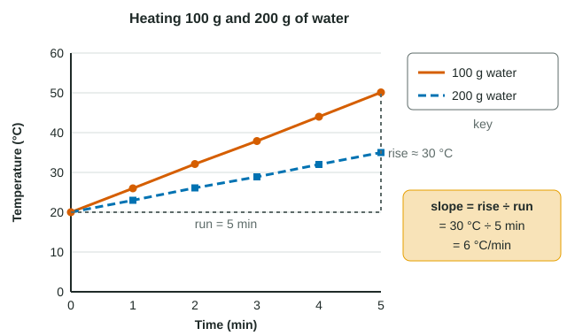

Why graph at all?
A table of temperatures every minute for two beakers is twelve numbers. Plot them and you see at once that one beaker warms twice as steeply as the other. Graphs turn data into patterns you can describe and compare. On the exam you will read graphs in nearly every question set, and at least one free-response question asks you to build one by hand, scored on details: axes, labels, units, scale, plotting and graph type.
Worked example: building a line graph and finding a slope

Data: 100 g and 200 g of water, starting at 20 °C, heated on identical hot plates. Temperatures at 0, 1, 2, 3, 4, 5 min: 100 g: 20.0, 26.0, 32.1, 37.9, 44.0, 50.1 °C; 200 g: 20.0, 23.0, 26.1, 28.9, 32.0, 35.0 °C.
- Variables: time is set (independent, x-axis); temperature is measured (dependent, y-axis).
- Graph type: time is continuous, so a line graph.
- Axes: "Time (min)" from 0 to 5 in steps of 1; "Temperature (°C)" from 0 to 60 in steps of 10. Even steps, and the data fill most of the grid.
- Plot each point and join each set in order; add a key: "100 g water", "200 g water"; add a title.
- Slope of the 100 g line = rise ÷ run = (50.1 − 20.0) °C ÷ (5 − 0) min = 6.0 °C/min. For 200 g: 15.0 ÷ 5 = 3.0 °C/min.
The slope has units: the y-unit per x-unit. Here twice the mass of water warms half as steeply, because equal heat per minute is spread over twice as many grams, and water's specific heat is a fixed amount per gram.
Choosing the graph type
| Graph | Use it when | Example |
|---|---|---|
| Line graph | The independent variable is continuous (time, temperature, concentration) | Water temperature every minute |
| Bar graph | The independent variable is a set of categories | Monomer released by four different enzymes |
| Scatterplot | Two measured variables for each individual; looking for a relationship | Mass of water against time to boil, for 12 beakers |
| Histogram | Showing how values of one variable are spread across ranges | Number of seeds in each 0.1 g mass range |
A line implies there are values between the points. That is true for time, false for "enzyme A, enzyme B". Joining category means with a line is a classic lost point.
Axes, scales and keys: where points are lost
- Label every axis with the quantity and its unit: "Temperature (°C)", not "Temp" or "°C".
- Use an even scale. Equal distances must stand for equal amounts. Marking the axis with only the values you recorded (20, 25, 35, 40, 60) makes the gaps unequal and bends the shape of the curve.
- Fill the grid. Pick steps so the data use most of the space. An axis may start above zero if it is labeled clearly.
- Add a key whenever more than one group is on the graph.
- Trend lines follow the overall pattern. Draw one line of best fit through scattered points; do not zigzag from point to point unless the question asks you to connect them.
Reading a graph: trends, interpolation and extrapolation
Describe a curve in words with numbers. In one experiment an enzyme was added to 50 mg of a polymer and the monomer released was measured: 0, 18, 34, 44, 49, 50 mg at 0, 2, 4, 6, 8, 10 min. The increases per 2 minutes shrink (18, 16, 10, 5, 1 mg), so the curve rises steeply and then levels off near 50 mg, about the total the polymer could release (slightly more by mass, since each hydrolysis adds a water molecule). Over the first 4 minutes the slope is 34 ÷ 4 = 8.5 mg/min; between 6 and 10 minutes it is only 6 ÷ 4 = 1.5 mg/min.
Interpolation means reading between measured points: the 100 g water at 2.5 min was about (32.1 + 37.9) ÷ 2 = 35 °C. Extrapolation means reading beyond them, and it is risky because the pattern may change. Extend the 100 g line to 15 minutes and you would predict 110 °C, but at normal air pressure water stops getting hotter near 100 °C, because added heat goes into breaking hydrogen bonds as it boils.
Correlation is not causation
A scatterplot whose points rise from lower left to upper right shows a positive correlation: the two variables tend to increase together. Points falling from upper left to lower right show a negative correlation. Points close to a trend line show a strong correlation; widely scattered points, a weak one.
A correlation does not tell you that one variable causes the other. Across 40 lakes, more shoreline plant growth might go with warmer water because shallow, sunny lakes have more of both. To test causation you need a controlled experiment: change one factor, hold the rest constant, and see whether the other responds.